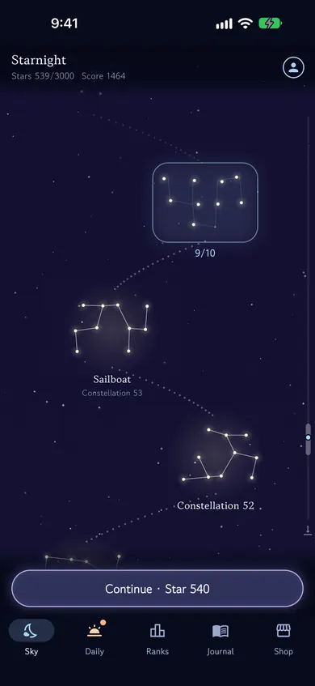
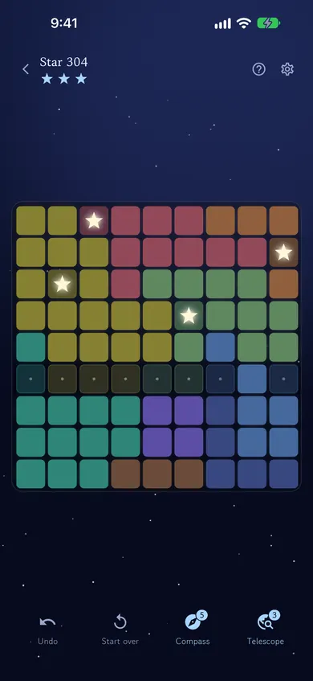
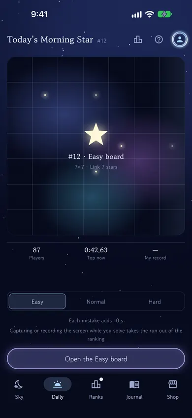

Starnight
Out now · Nov 20, 2026One star per row, column and color.
Connect the stars you find into constellations of your own.




- Every sky you solve gives you a starCollect a star with each board, then connect 10 of them into a constellation of your own.
- A new daily sky at noonEveryone gets the same sky. Pick Easy, Normal or Hard for one ranked try a day.
- 3,000 stars, an ever-wider skyFrom 5×5 up to 11×11, the sky keeps growing wider and deeper.
- No guessing neededEvery board can be solved by logic alone. Stuck? The compass shows the next move and why.
Who it's for
- Fans of Queens puzzles (like LinkedIn Queens) and Star Battle
- Anyone who likes logic puzzles you solve without guessing, like Sudoku or Nonograms
- Players who want one short daily puzzle — a new sky opens every day at noon
- Puzzle newcomers: when you're stuck, the compass shows the next move and explains why
FAQ
Is it free?
Yes.
You can download it and play every board for free.
It shows ads, and you can make a one-time "Remove ads forever" purchase in the app (₩9,900 in Korea, local store price elsewhere).
What are the rules?
Place exactly one star in every row, every column and every color region.
Stars can't touch each other, not even diagonally.
It's the same idea as Queens / Star Battle.
How many puzzles are there?
3,000 stars (boards), growing from 5×5 up to 11×11.
Every 10 stars connect into a constellation, for 300 constellations in all.
Do I ever need to guess?
No.
Every board can be solved by logic alone.
If you're stuck, the compass shows the next move and why.
Privacy Policy (Korean) · Terms of Service (Korean) · theo studio games home